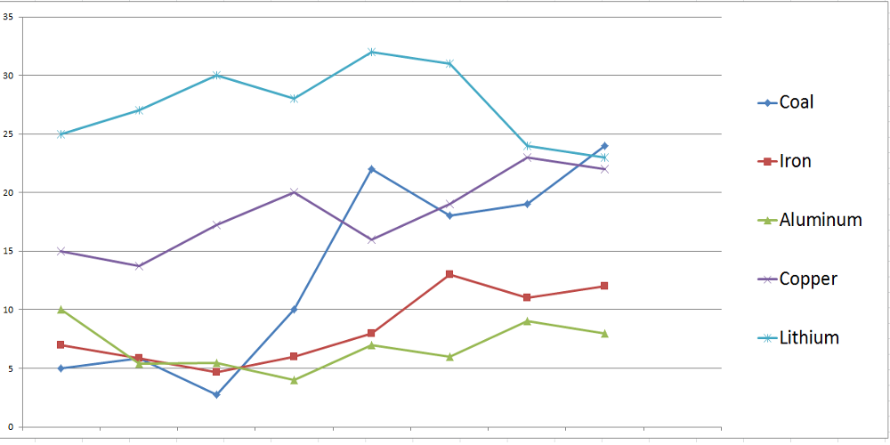
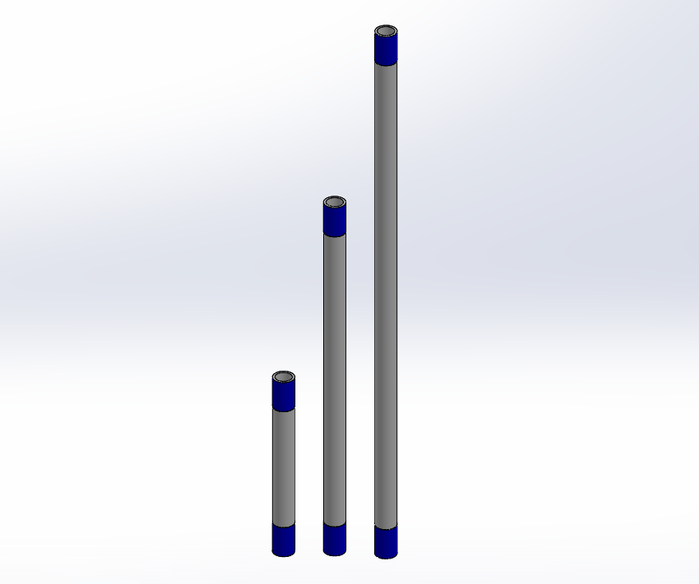

The game field is divided into quadrants, one for each team that is competing at a given time. Each quadrant is further split into three sections. The first section is the starting area where bins are placed to score the ores; the robot also starts in this section. The second section contains coal, iron, and air filter. The final section is shared by all four teams in the current round. Lithium ore and Four sets of core samples are placed in this third section.
Scoring Game Pieces
.png)
Coal
Value : 5
To score points, teams can place ores into the sorting bins, replace an air filter, retrieve one of three core samples, and/or fix a broken pipe. There are five ores that the robot can score coal, iron, aluminum, copper, and lithium. Each ore has a different point value.
Market Shift
Between Seeding, Semi-Finals, and Finals, point values can change according to the market shift. The market shift changes due to how many of each ore teams collect. A high scoring ore could easily become worthless if enough teams score it creating a negative market shift.
Repair Game Pieces
.png)
Certain parts of the mine shaft are broken and teams have the option of fixing these issues to score more points. One of these safety hazards is a damaged air filter that can be replaced to score 100 points. Teams can also replace a leaking gas pipe to score an additional 100 points.
Core Samples
The final method of scoring points are the core samples. There are three core samples that differentiate in points by 50, 100, and 150. The core samples differ in length depending on their point value. Teams can only score one of these core samples per round.
Copyright © WHWR 2015